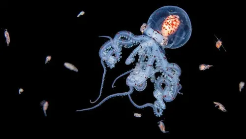
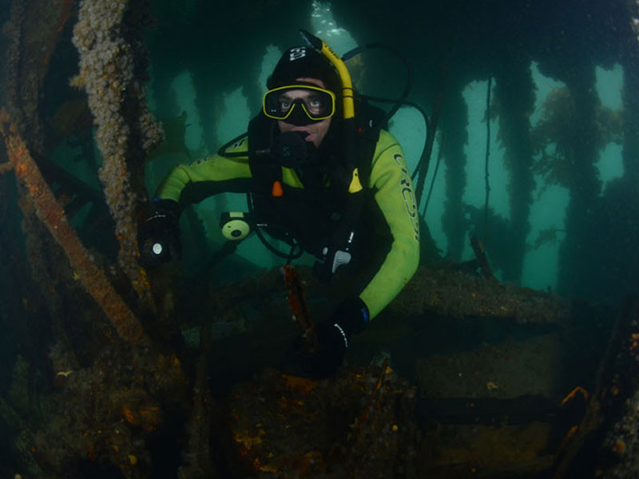

Safaris bioluminiscentes
Paseos presurizadas fuera de las cúpulas para alimentar a la fauna silvestre nocturna, como los pulpos de cabeza transparente del fondo del mar.


En nuestrad ciudad podras encontrar multiples actividades que realizan nuestros habitantes de forma cotidiana
Paseos presurizadas fuera de las cúpulas para alimentar a la fauna silvestre nocturna, como los pulpos de cabeza transparente del fondo del mar.

Carreras de natación entre barcos hundidos, en el Cementerio de Naufragios, y a través de los arrecifes de coral.
